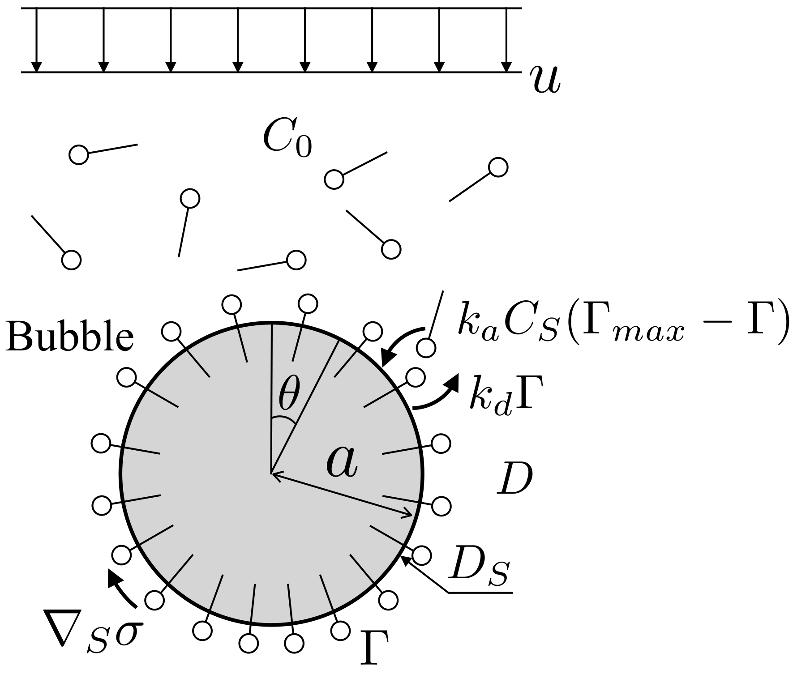

12.2. Surfactant transport
Summary
Subject: Transport equations of surfactant in bulk liquid and at interface
Main conclusion: \(\frac{\partial \Gamma}{\partial t} + \nabla_{s} \cdot \Gamma \mathbf{v}_{s} + \Gamma ( \mathbf{v} \cdot \mathbf{n} ) \nabla_{s} \cdot \mathbf{n} = \nabla_{s} \cdot D_{s} \nabla_{s} \Gamma + \dot{S}_{\Gamma}\)
Key idea Vectorial fassiion gives a simple derivation.
References:
Let \(S(t)\) be a two-dimensional closed surface embedded in a three dimensional space, like a bubble in liquid. Surfactant accumulates on \(S(t)\) . The total amount of surfactant on \(S(t)\) is written as
\[\begin{equation*}
\iint_{S(t)} \Gamma dS
\end{equation*}\]
The surfactant transfer between the bulk and molecular diffusion are neglected at this stage and will be considered later. Therefore, by the mass conservation law
(12.14) \[ \frac{D}{Dt} \iint_{S(t)} \Gamma dS = 0\]
where
(12.15) \[ \frac{D}{Dt} = \frac{\partial}{\partial t} + \mathbf{v}_{s} \cdot \nabla_{s}\]
is the surface material derivative. The velocity tangential to \(dS\) and the surface gradient operator are
(12.16) \[ \mathbf{v}_{s} = \left( \mathbf{I} - \mathbf{n} \mathbf{n} \right) \cdot \mathbf{v}\]
(12.17) \[ \nabla_{s} = \left( \mathbf{I} - \mathbf{n} \mathbf{n} \right) \cdot \nabla\]
\(\mathbf{n}\) is the unit outward normal to \(S(t)\) . In Eq. (12.14) , putting the material derivative inside the integral yields
(12.18) \[ \iint_{S(t)} \left\{ \frac{D \Gamma}{Dt} dS + \Gamma \frac{D dS}{Dt} \right\} = 0
\rightarrow
\iint_{S(t)} \left\{ \left( \frac{\partial \Gamma}{\partial t} + \mathbf{v}_{s} \cdot \nabla_{s} \Gamma \right) dS + \Gamma \frac{D dS}{Dt} \right\} = 0\]
The rate of change in \(dS\) can be rewritten as
(12.19) \[ \frac{1}{dS} \frac{DdS}{Dt}
= \nabla \cdot \mathbf{v} - ( \mathbf{n} \cdot \nabla ) ( \mathbf{v} \cdot \mathbf{n} )\]
See Prosperetti [Pro79 ] for the derivation of this relation. The R.H.S. becomes
(12.20) \[\begin{split}
\nabla \cdot \mathbf{v} - ( \mathbf{n} \cdot \nabla ) ( \mathbf{v} \cdot \mathbf{n} )
\rightarrow \frac{\partial v_{i}}{\partial x_{i}} - n_{j} \frac{\partial v_{i} n_{i}}{\partial x_{j}}
= \delta_{ij} \frac{\partial v_{i}}{\partial x_{j}} - n_{i} n_{j} \frac{\partial v_{i}}{\partial x_{j}} - v_{i} n_{j} \frac{\partial n_{i}}{\partial x_{j}}
= \left( \delta_{ij} - n_{i} n_{j} \right) \frac{\partial v_{i}}{\partial x_{j}}
\rightarrow \nabla_{s} \cdot \mathbf{v}
\end{split}\]
where \(\partial \mathbf{n} / \partial n = 0\) was used to eliminate the third term in the third equation. Thus,
(12.21) \[ \iint_{S(t)} \left\{ \frac{\partial \Gamma}{\partial t} + \mathbf{v}_{s} \cdot \nabla_{s} \Gamma + \Gamma \nabla_{s} \cdot \mathbf{v} \right\} dS = 0\]
The second term is transformed as
(12.22) \[ \mathbf{v}_{s} \cdot \nabla_{s} \Gamma
= \left\{ (\mathbf{I} - \mathbf{n} \mathbf{n}) \cdot \mathbf{v} \right\} \cdot \nabla_{s} \Gamma
= \left\{ \mathbf{v} - \mathbf{n}( \mathbf{v} \cdot \mathbf{n} ) \right\} \cdot \nabla_{s} \Gamma
= \mathbf{v} \cdot \nabla_{s} \Gamma - ( \mathbf{v} \cdot \mathbf{n} ) \mathbf{n} \cdot \nabla_{s} \Gamma
= \mathbf{v} \cdot \nabla_{s} \Gamma\]
since \(\mathbf{n} \cdot \nabla_{s} \Gamma = 0\) . Therefore,
(12.23) \[ \iint_{S(t)} \left\{ \frac{\partial \Gamma}{\partial t} + \mathbf{v} \cdot \nabla_{s} \Gamma + \Gamma \nabla_{s} \cdot \mathbf{v} \right\} dS = 0\]
and combining the second and third terms
(12.24) \[ \iint_{S(t)} \left\{ \frac{\partial \Gamma}{\partial t} + \nabla_{s} \cdot \Gamma \mathbf{v} \right\} dS = 0\]
Since \(S(t)\) is arbitrary,
(12.25) \[ \frac{\partial \Gamma}{\partial t} + \nabla_{s} \cdot \Gamma \mathbf{v} = 0\]
One can rewrite this equation using the interfacial quantities as follows:
(12.26) \[ \nabla_{s} \cdot \Gamma \mathbf{v}
= \nabla_{s} \cdot \Gamma ( \mathbf{v}_{s} + \mathbf{n} \mathbf{n} \cdot \mathbf{v} )
= \nabla_{s} \cdot \Gamma \mathbf{v}_{s} + \nabla_{s} \cdot \left \{ \Gamma \mathbf{n} ( \mathbf{v} \cdot \mathbf{n} ) \right\}
= \nabla_{s} \cdot \Gamma \mathbf{v}_{s} + \Gamma ( \mathbf{v} \cdot \mathbf{n} ) \nabla_{s} \cdot \mathbf{n} + \mathbf{n} \cdot \nabla_{s} \left\{ \Gamma ( \mathbf{v} \cdot \mathbf{n} ) \right\}\]
However, \(\mathbf{n} \cdot \nabla_{s} \left\{ \Gamma ( \mathbf{v} \cdot \mathbf{n} ) \right\} = 0\) , and therefore,
(12.27) \[ \frac{\partial \Gamma}{\partial t} + \nabla_{s} \cdot \Gamma \mathbf{v}_{s} + \Gamma ( \mathbf{v} \cdot \mathbf{n} ) \nabla_{s} \cdot \mathbf{n} = 0\]
\(\nabla_{s} \cdot \mathbf{n}\) is the mean curvature of interface. Introducing the interfacial and diffusion fluxes into the above equation yields
(12.28) \[ \frac{\partial \Gamma}{\partial t} + \nabla_{s} \cdot \Gamma \mathbf{v}_{s} + \Gamma ( \mathbf{v} \cdot \mathbf{n} ) \nabla_{s} \cdot \mathbf{n} = \nabla_{s} \cdot D_{s} \nabla_{s} \Gamma + \dot{S}_{\Gamma}\]
where \(D_{s}\) is the diffusion coefficient.

Fig. 12.1 Fully-contaminated drop/bubble in uniform flow
In the following, it is assumed that the surfactant is present only in the continuous phase (see Fig. 12.1 \(V(t)\) of the continuous phase is given by
(12.29) \[ \frac{D}{Dt} \iiint_{V(t)} C dV = 0\]
without diffusion. Here, \(C\) is the concentration of surfactant in the continuous phase and the material derivative is for the bulk fluid, that is, \(D/Dt = \partial / \partial t + \mathbf{v} \cdot \nabla\) . Having the material derivative inside the integral, we have
(12.30) \[ \iiint_{V(t)} \left\{ \frac{DC}{Dt} dV + C \frac{DdV}{Dt} \right\} = 0\]
The rate of change in \(dV\) is expressed as
(12.31) \[ \frac{1}{dV} \frac{DdV}{Dt} = \nabla \cdot \mathbf{v}\]
Therefore,
(12.32) \[ \iiint_{V(t)} \left\{ \frac{DC}{Dt} + C \nabla \cdot \mathbf{v} \right\} dV = 0\]
Thus, we obtain
(12.33) \[ \frac{DC}{Dt} + C \nabla \cdot \mathbf{v} = 0
~~~~\text{or}~~~~
\frac{\partial C}{\partial t} + \nabla \cdot C \mathbf{v} = 0\]
By introducing the diffusive flux, the transport equation of \(C\) is given by
(12.34) \[ \frac{\partial C}{\partial t} + \nabla \cdot C \mathbf{v} = \nabla \cdot D \nabla C\]
where \(D\) is the diffusion coefficient for \(C\) . The diffusive flux balances with the adsorption-desorption flux at the interface, i.e.,
(12.35) \[ - D \nabla C = \dot{S}_{\Gamma}~~~~\text{on}~S\]